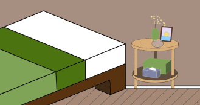
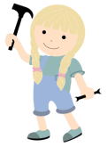

Wat is Green Home
Green Home is een bedrijf dat spullen recyclet om nieuwe meubels te maken. Door gratis te shoppen in een duurzame meubelwinkel, in plaats van in winkels met nieuwe producten waarvoor je vaak veel betaalt, draag je bij aan een betere en groenere wereld.
A greener home for a brighter future
Redenen om te recyclen
Door bij ons te recyclen, krijg je een gratis meubel op basis van je punten. Voor elk product dat je bij ons recyclet, ontvang je punten. Zodra je 50 punten hebt behaald, kun je een gratis meubel naar keuze uitzoeken. De meubels die we op voorraad hebben, zijn te vinden in ‘Green crafts’.
 Green CraftsDe meubels kan je ophalen bij 1 van onze locatie’s
Lokatie'sWat zou je allemaal kunnen recyclen?
Je kunt metaal, hout, glas, plastic, textiel, beton en steen bij ons recyclen, zodat we daar nieuwe meubels van kunnen produceren. De punten die je ontvangt zijn gebaseerd op de grootte en waarde van het product, en liggen meestal tussen de 5 en 25 punten.